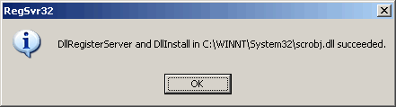

This section of the manual explains in detail how to add an Editize field to a form on an ASP-equipped Web site.
Upgrading?
For information on updating an existing Editize installation to a new release, see below.
Before integrating Editize into your Content Management System (CMS), you should first install it on your Web server and try out one or more of the sample scripts. Once you have verified that the samples work, you can proceed to use Editize anywhere you like on your site.
Your first step should be to copy or upload the contents of the asp
folder of the Editize distribution to a folder on your Web server.
If you use your own computer as a Web server for development purposes, copy
the files in the asp folder to a folder in your Web root.
Example 1: Uploading to your Web Host
If your Web site is hosted by a Web hosting company, use your FTP program (or whatever method you normally use to place files on your Web site) to create a folder callededitizein the root of your site. A file in this directory should be accessible with a URL such ashttp://www.yoursite.com/editize/filename. Upload all of the files in theaspfolder of the Editize distributon to this new folder on your Website.Example 2: Installing on your local test server
If you use Microsoft Internet Information Server (IIS) as a Web server on your Windows computer, the Web root folder isC:\Inetpub\wwwrootby default. If you use Apache, the Web root folder isC:\Apache\htdocsby default. Crate a new folder callededitizein your Web root folder. Copy all of the files in theaspfolder of the Editize distribution to this new folder on your Website.
The folder where you place the Editize files on your server must not be password protected. None of these files is a security risk, so you don't need to worry about them being publically accessible.
Here's a list of the files in the asp folder with an explanation
of what each one does:
editize.jar |
The Editize Java library file. This contains the Editize applet. |
editize.wsc |
The Editize API for ASP. This Windows Script Component will generate the HTML and JavaScript code neccessary to display the Editize applet on almost any browser or operating system. |
kunststoff.jar |
The Kunststoff Look & Feel. Improves the look of the Editize user interface dramatically, but adds 43KB of Java files for users' browsers to download the first time they visit your site. If you delete this file, Editize will simply run without any visual enhancements, and will load quicker over slow modem connections. |
osx.html |
A small Web page containing JavaScript that Editize uses automatically to behave like a form field on Internet Explorer for Mac OS X. |
Default.asp* |
A sample ASP script written in VBScript that demonstrates how to create Editize form fields compatible with most browsers. |
Default-jscript.asp* |
A sample ASP script written in JScript that demonstrates how to create Editize form fields compatible with most browsers. |
* Files marked with an asterix are sample scripts only, and are not required for Editize to function on your server.
The Editize folder on your server contains a few sample scripts for you to try out. Each of these scripts contains a form with an Editize field in it. When you submit the form, the script should display the HTML document you created in Editize, and allow you to load it back into the original form to edit further.
Open your Web browser and type the URL to load the Default.asp
script in the Editize folder on your Web server into the address
field.
Example 1: Running the sample on your Web Host
If your Web site is hosted by a Web hosting company, the Editize files should now be in a folder in the root of your Web site (e.g.http://www.yoursite.com/editize/). To load theDefault.aspsample script, typehttp://www.yoursite.com/editize/Default.aspinto your browser's address field.Example 2: Running the sample on your local test server
If you've placed the Editize files in a folder on your local test server, you should be able to run theDefault.asptest script by simply typinghttp://localhost/editize/Default.aspinto your browser's address field.
Have a play with the sample form, submit a document, and then re-open it for editing. If you run into any problems, see the Troubleshooting section of this manual. Otherwise, you're good to go!
To slightly simplify the code in your ASP pages and improve performance of the Editize API for ASP, you can register the Windows Script Component on your server. You can only do this if you have direct access to the server, or if your Web host is willing to do it for you.
Complete the following steps (or ask your Web host to complete them for you) to register the Windows Script Component in Windows on your Web server:
editize.wsc file (found in the asp
directory of this distribution) to a convenient folder on the server computer.
The SYSTEM32 subfolder of the Windows folder (e.g. C:\WINNT\SYSTEM32)
is a common choice, but you can put it elsewhere if you prefer. Please
note: the file may not reside on a network drive.
The Editize API for ASP is now registered as a Windows Script Component
on your server computer. Should you wish to unregister it at a later date,
simply right-click the file and choose Unregister, and then delete the editize.wsc
file.
If you have any trouble registering the component, please refer to the Troubleshooting section of this manual.
You can now add Editize fields to any form on your site.
As mentioned above, Editize is designed as a drop-in replacement for the HTML <textarea> tag. We will therefore explain how to use it by comparing it with that tag.
Here is a typical HTML form containing a <textarea> tag:
<form action="..." method="post"> <textarea name="example"> This is the document that the textarea will contain initially. </textarea> <input type="submit" value="Submit" /> </form>
The ASP API for Editize is designed so that you can simply replace
the <textarea> tag with some brief code to put an Editize
field in its place.
To quickly obtain the code to add an Editize to a form in your Web site, use the Code Generator to generate it automatically. Alternatively, read on to learn how to write the code yourself.
Here is an example of the simplest means to invoke Editize as a form field:
<form action="..." method="post"> <% Dim ed Set ed = Server.CreateObject("Editize.aspapi") ed.name = "example" Response.Write ed.DisplayContent("<p align=""center"">This is the document that Editize will edit.</p>") %> <input type="submit" value="Submit" /> </form>
The Server.CreateObject line in the above will only work if
the Editize Windows Script Component is registered on your Web server (see
Component Registration above). If you are
unable or unwilling to register the component, you can use the following slightly
less efficient syntax:
<form action="..." method="post"> <% Dim ed Set ed = GetObject("script:" & Server.MapPath("editize.wsc")) ed.name = "example" Response.Write ed.DisplayContent("<p align=""center"">This is the document that Editize will edit.</p>") %> <input type="submit" value="Submit" /> </form>
Similarly, in an ASP page set to use JScript as the scripting language:
<form action="..." method="post"> <% var ed = Server.CreateObject("Editize.aspapi"); ed.name = "example"; Response.Write(ed.DisplayContent("<p align=\"center\">This is the document that Editize will edit.</p>")); %> <input type="submit" value="Submit" /> </form>
Or with an unregistered component file:
<form action="..." method="post"> <% var ed = GetObject("script:" + Server.MapPath("editize.wsc")); ed.name = "example"; Response.Write(ed.DisplayContent("<p align=\"center\">This is the document that Editize will edit.</p>")); %> <input type="submit" value="Submit" /> </form>
The meaning of the 4 lines of VBScript (or 3 lines of JScript) should be
fairly apparent to experienced ASP developers. The first line or two creates
an Editize.aspapi object, which will do all the work of generating
the HTML and JavaScript code to display the Editize applet as a form
field.
The next line sets the name property of the object, which is
equivalent to the name attribute of a <textarea>
tag. You should always specify a field name in this way when you use Editize,
although if you don't a default of editize will be used.
Finally, the last line displays the Editize field; that is, it
outputs all of the HTML and JavaScript code to place the Editize
field in the page at that point. In this example, we have passed the initial
document to be displayed (the equivalent of the contents of the <textarea>
tag) to the DisplayContent method. Alternatively, the Display
method, which takes no arguments, can be used to display Editize
with a blank document.
The Editize applet is very configurable. You can customize the formatting applied by the various styles and tools available, and even specify that certain features should be disabled entirely if they are not appropriate for your environment.
By default, the Editize API for ASP enables all of Editize's formatting tools with default format settings. This section demonstrates how to use the properties supported by the Editize API for ASP to modify these defaults.
To set the values of properties, simply specify them as you did for the name
attribute in the simple example above. For instance, to create an Editize
field with a base font of 12-pixel Verdana, you would use the following VBScript
code (or the equivalent JScript):
<form action="..." method="post"> <% Dim ed Set ed = Server.CreateObject("Editize.aspapi") ed.name = "example" ed.basefontface = "Verdana" ' SETS THE FONT FACE ed.basefontsize = 12 ' SETS THE FONT SIZE Response.Write ed.DisplayContent( "<p align=""center"">" & _ "This is the document that Editize will edit.</p>") ?> <input type="submit" value="Submit" /> </form>
Note that you have to set all the properties you want before you call the
Display or DisplayContent methods.
A list of all supported properties with examples for each is provided in the Reference section of this manual, or you can use the Code Generator to select all the properties you want from a list and have the code generated for you automatically.
By default, the Insert Image tool in Editize will prompt the user for the URL of the image he or she wishes to insert. Since it can be fairly tedious to hand-type the URL for every image, Editize also provides a method to specify a list of images that users may quickly choose from.
The imglisturl property lets you set a URL from which Editize
will download a list of images to present it to the user in the Insert
Image dialog. The given URL may refer to a server-side script (e.g. to provide
an up-to-date list of images stored in a content management system). If a
static list of images is all that you need, you can simply point Editize
to a text file of the required format residing on your server.
The documentation for imglisturl
in the Reference section of this manual explains
the required format of the image list. A sample script written in PHP called
imglist.php that produces a list of all the images in a given
directory and its subdirectories is provided in the php folder
of this distribution.
The following browsers do not support the standard for JavaScript-to-Java communication, upon which Editize relies:
Editize therefore uses an alternative submission method on these browsers. As a side effect, when the form is submitted using an HTML submit button (<input type="submit">), that submit button's value is not submitted to the server for processing along with the rest of the form data.
To make HTML submit buttons submit correctly in all supported browsers, you must include the following VBScript code immediately after the closing </form> tag for the form that contains your Editize field(s):
<%
Response.Write ed.EndForm()
%>
Here's the JScript equivalent:
<%
Response.Write(ed.EndForm());
%>
The EndForm method of the Editize API shown here outputs some additional HTML and JavaScript code that makes HTML submit buttons work correctly alongside the Editize fields in your form. This code must occur in the page after your form, which is why it must be output separately using this method.
On top of this, Netscape 4.x by default is not supported by the Editize API for ASP, as it contains bugs that prevent this alternative submission method from working properly. By default, Editize fields will be displayed as standard <textarea> fields in Netscape 4.x.
To run Editize in Netscape 4.x, you need to use the endForm method as described above, and you must additionally set the ns4support property of your Editize field(s) to true:
ed.ns4support = true
Remember, although the call to endForm goes after your closing </form> tag, you must set the ns4support property along with your other Editize field properties before calling Display or DisplayContent.
The default.asp and default-jscript.asp sample scripts included in the asp folder of this archive use the above techniques to provide maximum browser compatibility.
Refer to the documentation for endForm and ns4support in the Reference section of this manual for further details.
In most cases, all you need to do to upgrade to a new release of Editize is to upload the new versions of editize.jar, editize.wsc, osx.html, and optionally kunststoff.jar over the old versions already on your server. It is very important that you replace all of these files, as changes made to one in a particular release often rely on changes made to another.
Occasionally, we add new features to Editize. Very occasionally, we change the way the APIs work. In both of these cases, you may need to make some changes to the page(s) on your site(s) that use Editize to make the new version work the way you expect it to. Always read the Revision History for the new release to find out when such changes are made.